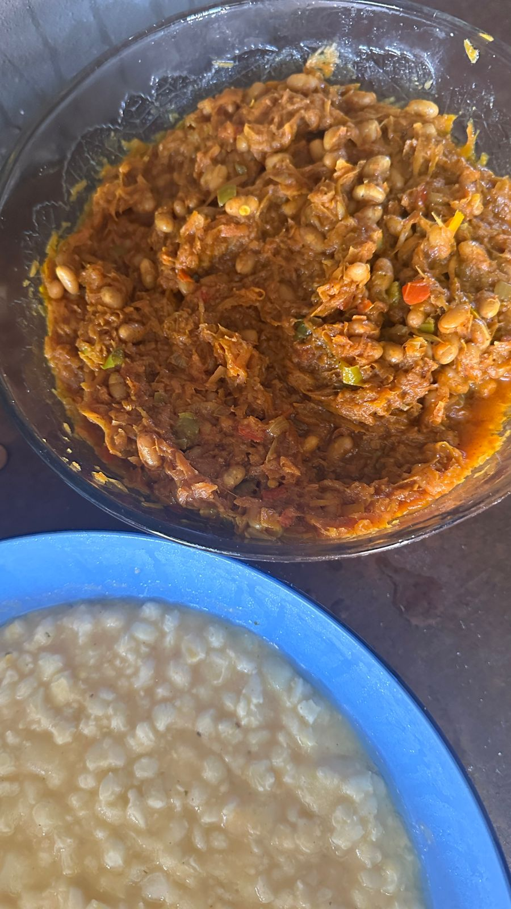

Chakalaka: Spicy and Affordable
Chakalaka is a must-have at any South African braai or Christmas table. It’s packed with flavour and doesn’t require expensive ingredients.

Ingredients
- 2 onions, chopped
- 2 carrots, grated
- 1 can baked beans
- 1 bell pepper, chopped
- 1–2 tsp curry powder
- Salt and pepper to taste
- Sweet chilli sauce (optional)
Instructions
- Heat a little oil in a pan over medium heat.
- Add the onions and sauté until soft.
- Stir in the grated carrots and chopped bell pepper. Cook for 3–4 minutes.
- Add the curry powder, salt, and pepper. Stir well.
- Pour in the baked beans and add a splash of sweet chilli sauce if desired.
- Simmer for 5–7 minutes, stirring occasionally, until everything is combined.
- Serve warm as a side for your braai or festive meal.
Budget Tip: Use local carrots and onions—they are cheaper than pre-chopped or imported options.